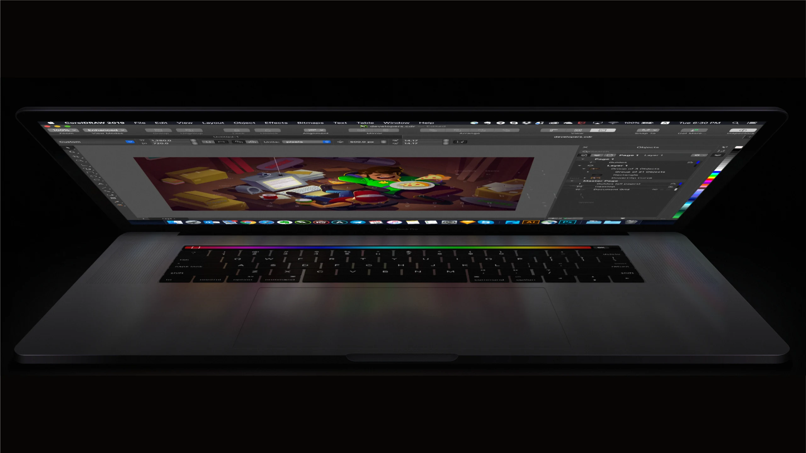

MineCare
A UX case study for MineCare — turning a suite of inconsistent, duplicated desktop tools for open-pit mines into one role-based platform for fleet health, diagnostics and maintenance.
Credits
Bingham Canyon Mine by Dr Carlos Bartesaghi Koc, CC BY-NC-SA 4.0 · Komatsu HD785-7 by Maxim Lukyanov, CC BY 4.0 · Excavator by Dioramass design, CC BY 4.0
Drag to orbit · Ctrl + scroll to zoom · click a truck or a markerCtrl + scroll to change altitude · roads coloured by qualityChase camera · pick another truck in the fleet listDrag to look around the cabTap the pit to explore it full screen
Context
Challenge
MineCare had grown into a suite of applications with inconsistent design and duplicated functionality across platforms — hard for IT to support and hard for the people in the pit and the control room to use.
One mine, too many applications
-
Today
- Grey, dialog-on-dialog Windows tools
- The same task solved differently in each app
- Diagnostics (RTM) opened in separate windows
- No overview of fleet health at all
-
Target
- One shell, pluggable components
- Shared UI library and UX guidelines
- Diagnosis, monitoring and work orders in one flow
- Fleet health at a glance, by role
What MineCare watches
- EventsOEM sensor eventsCritical, non-critical and informational events from on-board systems like VIMS.
- RTMReal-time monitoringLive parameter streams opened on demand for a single machine.
- SnapshotsBefore & afterSensor data captured seconds before and after an event, to find its cause.
- Work ordersMaintenanceDiagnosis turns into tasks, parts and a technician in the truck shop.
Discovery
Users
Five roles share every alert — from the dispatcher who sees it first to the technician who fixes the truck. We met them, then built a persona and a scenario for each.
Dave, Maintenance Dispatcher
Works in an office on a desktop PC with multiple monitors, tracking the health of the whole fleet at once. First to see every alert — he diagnoses, decides and delegates.
Needs
- A high-level view of fleet health
- Notifications about upcoming issues
- As much diagnostic information as possible
Goals
- Address problems instantly, as they occur
- Identify the nature of the problem
- Delegate the decision once it is identified
Pain points
- Impossible to assess overall fleet health
- Hard to tell how critical an event is
- The system doesn't know who should get the work order
- Finding people's contacts takes extra effort
- Diagnostics (RTM) live in a separate application
Gains — how we help
- A streamlined UI for performing diagnostics
- Quick access to contact information
- Events matched to the supervisor responsible for that area
A shift with Dave
- 01BackstoryDave logs in to MineCare. His job is to keep every machine healthy — when something goes wrong, the system raises an alert.
- 02Configure notificationsHe checks the notification logic in Application Settings. The defaults already cover his needs out of the box.
- 03Configure eventsIn Event Handling he adds custom snapshots with start and end intervals, and raises the max engine temperature — technicians told him the regional climate runs hot.SnapshotsThresholds
- 04Obtain diagnosticsA critical event arrives from truck T102 every 10 seconds: the hydraulic oil pressure sensor is transmitting abnormal values. Dave opens the notification, sees location and latest values, accepts it and compares native and custom snapshots.
Architecture
Structure
The user journey shows how one OEM event becomes a closed work order. The information architecture maps every screen to the role that owns it.
Event handling and real-time monitoring
Alternative paths: a dispatcher can snooze or suppress a notification; cancelling a snooze groups all new events under a fresh notification.
Event configuration
Everything the journey depends on is configurable — seven configuration areas behind the scenes.
- OEM event / notificationLevel, description, parameter, min/max, profile, snapshot, docs.
- SnapshotsCreate, update, delete and clone.
- Email / phoneWho gets a text or an email, and when.
- SnoozeRules and expiration criteria.
- SuppressRules and expiration criteria.
- Global eventsOwnership, event grouping, last-value and sensor checks.
- Failure modesName and description for each failure mode.
Who works where
Pick a role to see which sections are theirs.
Interaction
Flows
Every flow was drawn state by state — 3.1 Edit Event through 3.8 Clone Snapshot — with annotated rules for developers. Try the snapshot flow Dave uses in his scenario.
Add a snapshot to an event
Edit Hoist Screen — Active Event
- General information
- Snapshot parameters
- Attached
Intervals change incrementally, in 30-second steps.
Parameters for interface VIMS 785B
Selected parameters 0
Check a parameter to add it to the right list. Create & Attach stays disabled until something is selected.
Snapshot 1 attached
Choosing Detach returns the event to state 3.1.
Concepts & interface
Design
Sketched at the whiteboard with the dev lead and written down as shared UI guidelines every MineCare application would follow — then carried into a calm, data-dense interface for long shifts in front of several monitors.
How loud should an alert be?
A toast for every critical notification breaks down fast in a dispatcher's day, so the shell adapts to how often they arrive.
Pluggable component model
The core concept of the guidelines: an application is decomposed into components that live on a Dashboard. Hover or tap a screen.
Visual design
White cards on a quiet canvas, one indigo accent, and colour reserved for the state of a machine.
Next project
CorelDRAW for macOS
Bringing a Windows design suite to the Mac →
